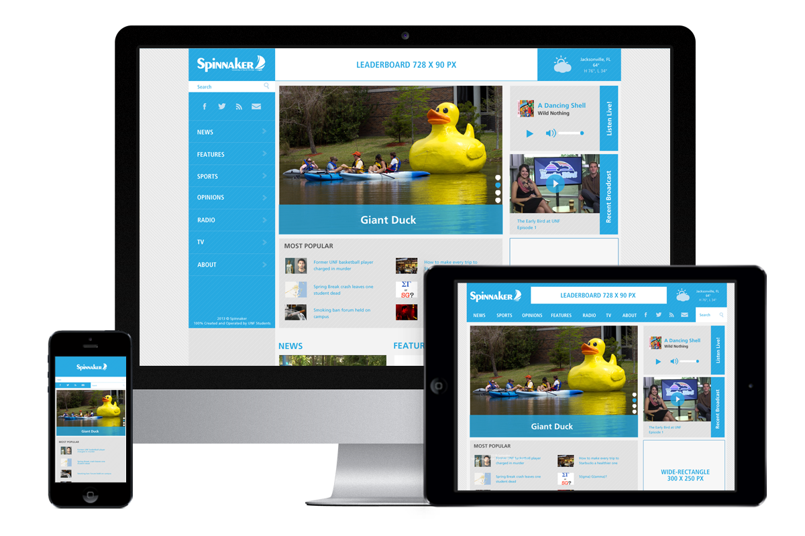

UNF Spinnaker
Official Student Media Source for the University of North Florida
I was given the opportunity to redesign the newspaper’s website, twice. In this most recent version the goals were to better incorporate social media integration, restructure the website to better include the newly renamed Spinnaker Radio and Spinnaker Television, and create a multimedia environment which would allow new student-staff to properly maintain and update it in the upcoming semesters.
